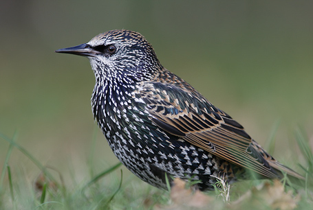
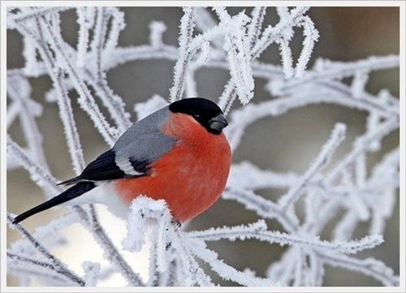
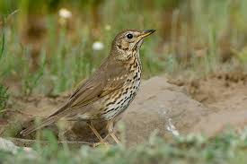
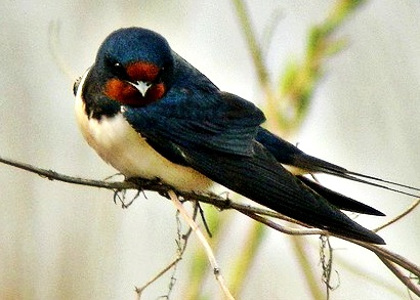

Gatunek średniej wielkości ptaka wędrownego z rodziny wilgowatych (Oriolidae),
jedyny z tej rodziny rozmnażający się w północnej strefie umiarkowanej. Nie jest zagrożony wyginięciem.
Posłuchaj jak śpiewa ;)
Wilga
2. Szpak

Krótki opis:
Gatunek średniej wielkości ptaka z rodziny szpakowatych (Sturnidae). Częściowo wędrowny. Pierwotnie zamieszkiwał wyłącznie Eurazję.
Nie jest zagrożony wyginięciem. Dzięki introdukcji gatunek kosmopolityczny, w 13 podgatunkach występuje na każdym kontynencie poza Antarktydą;
poza rodzimym zasięgiem także w Ameryce Północnej (od Jukatanu po Alaskę), Argentynie, Południowej Afryce, wschodniej Australii,
Nowej Zelandii i okolicznych wyspach. Jest to gatunek inwazyjny.
Posłuchaj jak śpiewa ;)
Szpak
3. Gil

Krótki opis:
gatunek małego ptaka z rodziny łuszczakowatych (Fringillidae), zamieszkujący Eurazję. Nie jest zagrożony.
Posłuchaj jak śpiewa ;)
Gil
4. Drozd śpiewak

Krótki opis:
Gatunek średniej wielkości ptaka z rodziny drozdowatych (Turdidae), zamieszkującego Eurazję. Wierzch ciała brązowy o ciepłym odcieniu,
kuper i pokrywy nadogonowe oliwkowe, ogon i wierzch głowy pomarańczowobrązowe. Spód ciała kremowy z gęstymi brązowymi plamkami. Wyróżnia się trzy podgatunki.
Do jego charakterystycznej piosenki, w której powtarza muzyczne frazy, często odnoszono się w poezji.
Posłuchaj jak śpiewa ;)
Śpiewak
5. Jaskółka

Krótki opis:
Gatunek niewielkiego ptaka wędrownego z rodziny jaskółkowatych (Hirundinidae).